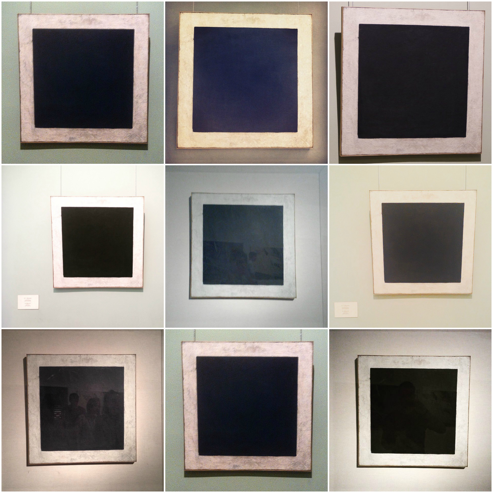
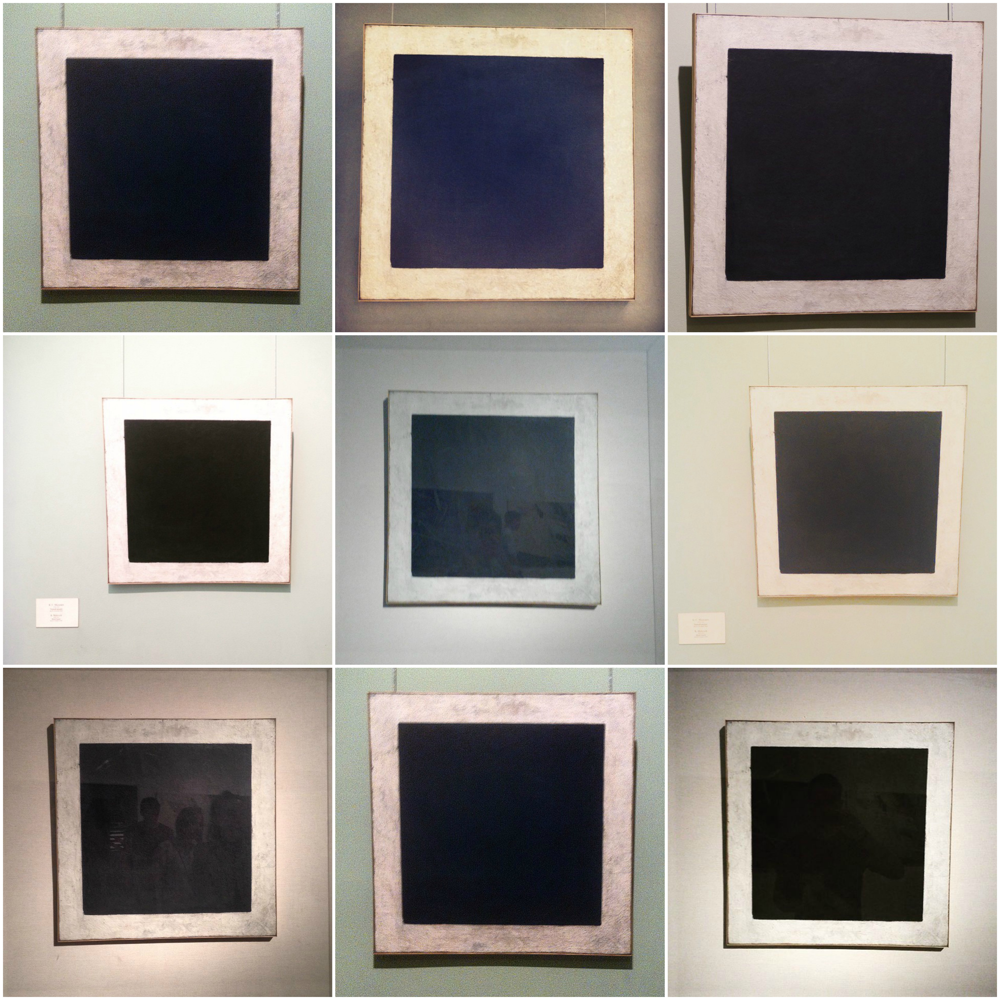

Искусство
Несмотря на большое количество снимков произведений искусства, цель этих фотографий - не документировать
увиденные шедевры, а рассказать о них в контексте посещения музея. Распространены коллажи - подборки из нескольких наиболее
запомнившихся экспонатов, собранных в одном кадре.


Внимание к скульптуре (3D-объектам) и живописи (2D) почти одинаковое.
Из 3D-объектов лидируют группа конных рыцарей из Рыцарского зала, «Амур и Психея» Антонио Кановы и часы «Павлин».


Самые популярные 2D-объекты - «Мадонна Литта»,
«Черный квадрат» Казимира Малевича, «Танец» и «Музыка» Анри Матисса. Первые две картины в принципе наиболее
узнаваемы из всей живописной коллекции. «Мадонна Литта» - неформальный символ Эрмитажа.
 


«Танец» и «Музыка» оказались наиболее интерактивными произведениями: на их фоне чаще позируют
и делают селфи. Кроме того, композицию «Танца» любят повторять группой.
Отмечая или дополняя изображенное, посетители взаимодействовуюют с предметами искусства.

Несмотря на запреты, иногда посетители контактируют с экспонатами напрямую
и документируют это. На фотографиях можно увидеть, как люди трогают дверные ручки и вазы, касаются поверхностей из мозаики или мрамора
и таким образом транслируют свой тактильный опыт. Наиболее интерактивны скульптуры, поскольку предлагают больше вариантов для
взаимодействий - их можно взять за руку, обнять, а в некоторых случаях и поцеловать.
Коснуться музейных артефактов - это, по мнению Instagram-пользователей, еще один способ связать себя с
пространством музея.